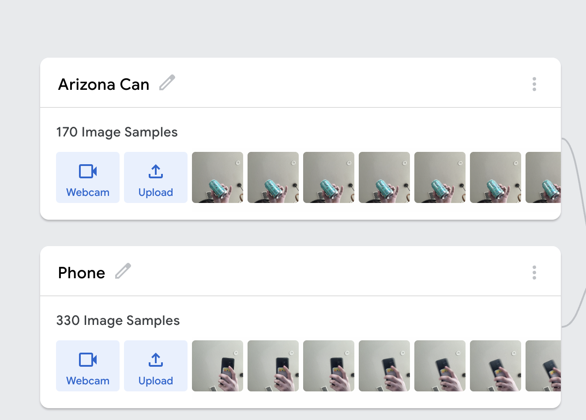

There is a really cool website that allows you to make a really really simple machine learning program. It's called Teachable Machine. It's really easy to use, and it's a great way to get started with machine learning.
We are going to be going over the basics of how to use Teachable Machine, and how to make a really simple object recognition program.
Go to Teachable Machine and click on the "Get Started" button.
Select "Image Project"
Choose the standard image model
It is best to think of two really distinct categories of objects. For example, you could do a program that recognizes a cat or a dog, or a program that recognizes a car or a truck. What you don't want to do is compare two similar objects like two slightly different types of apples. It is possible for a model to recognize them, but that would require a rather large dataset.
Spend a bit getting several good images of your objects. You want to make sure that the images are clear and that the object is in the center of the image, which a variety of lighting and angles. You want to upload at least 10 images for each object.
You are just going to be uploading the images into their respective class.
Select Webcam and then move your object into the view. Move it around while holding the "Hold to record" button.
Here is an image with an example of an Arizona Iced Tea and my phone.
Click on the "Train" button to train your model. This may take at most a few minutes.
It may say that the page is unresponsive, but it is just training. Keep the tab open and in focus and it will finish training.
After the model is trained, you are able to test the model with the Preview window. You are also able to download it if you want to use it in TensorFlow in python but we wont do that yet.
Here is an image with an example of an Arizona Iced Tea and my phone being recognized pretty accurately.
Congrats! You've made your first machine learning program! This is the first of many, this is only the image recognitation part. There are many other interesting things that you are able to do with machine learning. I hope this peaks your interests.
If there are any edits that you would like to request to be added to this, please submit them in an issue in the GitHub or you can send an email to sysadmin@silverflag.net